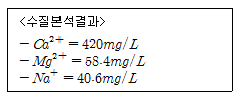
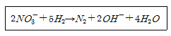
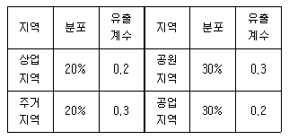
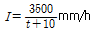
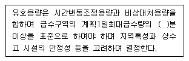
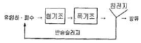
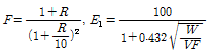
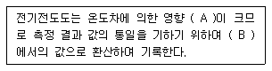

수질환경기사 (2010-05-09 기출문제)
1과목: 수질오염개론
1. 다음 중 균류(Fungi)의 경험적 화학 조성식으로 가장 알맞은 것은?
- C7H14O3N
- C5H7O2N
- C10H17O6N
- C12H19O7N
(정답률: 81%)

2. 어느 시료의 대장균 수가 5,000/㎖ 이라면 대장균 수가 50/㎖ 이 될 때까지 필요한 시간은? (단, 1차 반응 기준, 대장균의 1시간이다.)
- 약 4.8시간
- 약 5.3시간
- 약 6.7시간
- 약 7.9시간
(정답률: 55%)
3. 다음 중 지하수의 특징으로 옳지 않은 것은?
- 자정속도가 느리다.
- 유기물의 분해는 세균에 의해 주로 일어난다.
- 유속이 적고 국지적으로 환경조건의 영향을 크게 받는다.
- 불용성 현탁물질은 여과에 의해 제거되지 않는다.
(정답률: 60%)
4. 0.02M-KBr과 0.02M-ZnSO4 용액의 이온강도는? (단, 완전 해리 기준)
- 0.08
- 0.10
- 0.12
- 0.14
(정답률: 47%)
5. Glycine(C2H5O2N)이 호기성 조건에서 CO2, H2O와 HNO3 로 분해된다면 glycine 10g 분해에 소요되는 산소량은?
- 약 13 g
- 약 15 g
- 약 17 g
- 약 19 g
(정답률: 49%)
6. 이상적 plug flow에 관한 내용으로 옳은 것은?
- 분산(variance, o2): 0, 분산수(dispersion NO.): 0
- 분산(variance, o2): 0, 분산수(dispersion NO.): 1
- 분산(variance, o2): 1, 분산수(dispersion NO.): 0
- 분산(variance, o2): 1, 분산수(dispersion NO.): 1
(정답률: 66%)
7. BOD5가 270mg/ℓ이고, COD가 350mg/ℓ인 경우, 탈산소계수(K1)의 값이 0.2/day 이라면, 이 때 생물학적으로 분해 불가능한 COD는? (단, BDCOD=BODu, 상용대수 기준)
- 50mg/ℓ
- 80mg/ℓ
- 120mg/ℓ
- 180mg/ℓ
(정답률: 57%)
8. 해류에 관한 설명으로 옳지 않은 것은?
- 조류: 지구와 달과 태양의 인력에 의해 발생 된다.
- 쓰나미: 해저의 화산활동으로 인해 발생 된다.
- 상승류: 바람과 해양 및 육지의 상호작용에 의해 해수가 저부에서 상부로 상승하여 발생 된다.
- 심해류: 수층이 안정된 심해에서 지구 자전의 영향으로 발생 된다.
(정답률: 58%)
9. 기체의 법칙 중 Graham의 법칙에 관한 설명으로 가장 적절한 것은?
- 기체가 관련된 화학반응에서는 반응하는 기체와 생성된 기체의 부피 사이에는 정수관계가 성립한다.
- 기체의 확산속도(조그마한 구멍을 통한 기체의 탈출)는 기체 분자량의 제곱근에 반비례한다.
- 일정한 온도에서 일정한 부피의 액체에 용해되면 기체의 양은 그 액체 위에 미치는 기체 압력에 비례 한다.
- 공기와 같은 혼합기체 속에서 각 성분기체는 서로 독립적으로 압력을 나타낸다.
(정답률: 85%)
10. 수질분석 결과가 다음과 같다. 이 시료의 경도의 값은? ( 단, Ca=40, Mg=24, Na=23 이다.)

- 약 1100 mg/L as CaCO3
- 약 1200 mg/L as CaCO3
- 약 1300 mg/L as CaCO3
- 약 1400 mg/L as CaCO3
(정답률: 65%)
11. 유량이 10000 m3/day인 폐수를 하천에 방류하였다. 폐수 방류전 하천의 BOD는 4 mg/L이며, 유량은 4000000 m3/day이다. 방류한 폐수가 하천수와 완전 혼합 되었을 때 하천의 BOD가 1 mg/L 높아진다고 하면, 하천에 가해지는 폐수의 BOD 부하량은? (단, 폐수가 유입된 이후에 생물학적 분해로 인한 하천의 BOD 량 변화는 고려하지 않음)
- 1280 kg/day
- 2810 kg/day
- 3250 kg/day
- 4⑤0 kg/day
(정답률: 37%)
12. 자정상수(f)의 영향 인자에 관한 설명으로 옳은 것은?
- 수심이 깊을수록 자정상수는 커진다.
- 수온이 높을수록 자정상수는 작아진다.
- 유속이 완만할수록 자정상수는 커진다.
- 바닥구배가 틀수록 자정상수는 작아진다.
(정답률: 74%)
13. 길이가 500km이고 유속이 1m/s인 하천에서 상류지점의 BODu 농도가 250ppm이면 이 지점부터 450km 하류지점의 잔존 BOD 농도는? (단, 탈산소계수는 0.1/day, 수은 20℃, 상용대수 기준, 기타조건은 고려하지 않은)
- 약 55ppm
- 약 65ppm
- 약 75ppm
- 약 85ppm
(정답률: 56%)
14. 20℃의 하천수에 있어서 바람 등에 의한 DO 공급량이 0.02mgO2/Lㆍday 라고 하고 이 강이 항상 DO 농도가 6mg/L 이상 유지되어야 한다고 한다면 이 강의 산소 전달계수(hr-1)는? (단, α와 β는 무시하며 20℃ 포화 DO는 9.17mg/L)
- 1.3×10-3
- 2.6×10-3
- 1.3×10-4
- 2.6×10-4
(정답률: 28%)
15. 수분 함량 97% 의 슬러지에 응집제를 가하니 [상등액: 침전슬러지] 용적비가 2:1로 되었다. 이때 침전슬러지의 수분함량은? (단, 비중은 1.0, 응집제의 양은 무시, 상등액은 고형물이 없음)
- 83%
- 85%
- 87%
- 91%
(정답률: 63%)
16. 미생물을 진핵세포와 원핵세포로 나눌 때 원핵세포에는 없고 진핵세포에만 있는 것은?
- 리보솜
- DNA
- 세포벽
- 세포소기관
(정답률: 77%)
17. 오염물질의 종류에 따른 배출원 및 영향으로 가장 거리가 먼 것은?
- 비소 - 농약제조, 피혁제조업 - 수족의 자각장해, 위장염
- 수은 - 농약공장, 계기제조과정 - 시야 협착증, 미나마타병
- 납 - 축전지 제조, 안료제조 - 소화기계 장해, 빈혈
- 크롬 - 유리공업, 코크스공장 - 피부궤양, 간경변, 카네미유증
(정답률: 54%)
18. 친수성 클로이드에 관한 설명으로 옳지 않은 것은?
- 다량의 염을 첨가하여야 응결 침전된다.
- 물속에 서스펜션(Suspension)으로 존재한다.
- 매우 큰 분자 도는 이온상태로 존재한다.
- 물과 강하게 반응하는 성질이 있다.
(정답률: 55%)
19. 아세트산(CH3COOH) 300mg/ℓ 용액의 pH는? (단, 아세트산 Ka 는 1.8×10-5)
- 4.65
- 4.21
- 3.85
- 3.52
(정답률: 52%)
20. 아래와 같은 반응에 관여하는 미생물은?

- Pseudomonas
- Sphaerotilus
- Acinetobacter
- Nitrosomonas
(정답률: 73%)
2과목: 상하수도계획
21. 상수처리시설인 ‘착수정’에 관한 설명으로 옳지 않은 것은?
- 형상은 일반적으로 직사각형 또는 원형으로 하고 유입구에는 제수밸브 등을 설치한다.
- 착수정의 고수위와 주변벽체의 상단 간에는 60cm 이상의 여유를 두어야 한다.
- 용량은 체류시간을 30~60분 정도로 한다.
- 수심은 3~5m 정도로 한다.
(정답률: 71%)
22. ‘계획오수량’에 관한 설명으로 옳지 않은 것은?
- 합류식에서 우천시 계획오수량은 원칙적으로 계획 시간 최대 오수량의 3배 이상으로 한다.
- 계획 시간 최대 오수량은 계획 1일 최대 오수량의 1시간당 수량의 1.3~1.8배를 표준으로 한다.
- 계획 1일 평균 오수량은 계획 1일 최대 오수량의 70~80%를 표준으로 한다.
- 지하수량은 1인 1일 최대 오수량의 5~10%로 한다.
(정답률: 67%)
23. 상수도에서 적용되는 급속여돠지에 관한 설명으로 옳지 않은 것은?
- 여과면적은 계획정수량을 여과속도로 나누어 구한다.
- 1지의 여과면적은 120m2 이하로 한다.
- 여과속도는 120~150m/d 를 표준으로 한다.
- 급속여과지는 중력식, 형상은 직사각형을 표준으로 한다.
(정답률: 67%)
24. 하수 관거시설의 황화수소 부식 대책으로 옳지 않은 것은?
- 관거를 청소하고 미생물의 생식 장소를 제거한다.
- 환기에 의해 관내 황화수소를 희석한다.
- 황산염환원세균의 활동을 촉진시켜 황화수소방생을 억제한다.
- 방식재료를 사용하여 관을 방호한다.
(정답률: 54%)
25. 하천수의 취수에 관한 설명으로 옳지 않은 것은?
- 취수보는 안정된 취수와 침사 효과가 큰 것이 특징이다.
- 취수탑(취수지점)은 하천유황이 안정되고 또한 갈수 수위가 2m 이상인 것이 필요하다.
- 취수문은 하천유황의 직접적 영향이 없으므로 취수 상황이 안정적이다.
- 취수관거는 하상변동이 큰 지점에서는 적당하지 않다.
(정답률: 57%)
26. 상수시설인 완속여과지에 관한 기준으로 옳지 않은 것은?
- 여과지의 깊이는 자갈층 두께, 모래층 두께에 모래면 위의 수심을 더하여 2.5~3.5m를 표준으로 한다.
- 여과속도는 4~5m/d를 표준으로 한다.
- 여과지의 수는 예비지를 포함하여 2지 이상으로 하고 10지마다 1지 비율로 예비지를 둔다.
- 여과지의 모래면 위의 수심은 90~120cm를 표준으로 한다.
(정답률: 23%)
27. 도수거에 관한 설명으로 옳지 않은 것은?
- 수리학적으로 자유 수면을 갖고 중력 작용으로 경사진 수로를 흐르는 시설이다.
- 개거나 암거인 경우에는 대개 300~500m 간격으로 시공조인트를 겸한 신축조인트를 설치한다.
- 균일한 동수경사(통상 1/1000 ~ 1/3000)로 도수하는 시설이다.
- 도수거의 평균유속의 최대한도는 3.0m/s로 하고 최소유속은 0.3m/s 로 한다.
(정답률: 46%)
28. 하수를 처리장으로 유입시키는 펌프중 스크류펌프의 단점이라 볼 수 없는 것은?
- 침사지를 설치하여야 한다.
- 일반펌프에 비하여 펌프가 크게 된다.
- 토출측의 수로를 압력관으로 할 수 없다.
- 양정에 제한이 있다.
(정답률: 14%)
29. 다음 표는 어떤 지역의 우수량을 계산하기 위해 조사한 지역 분포와 유출계수 표이다. 전체 평균유출계수는?

- 0.21
- 0.23
- 0.25
- 0.27
(정답률: 64%)
30. 관경 1100mm, 역사이펀 관거내의 유속에 대한 동수경사 2.4%, 유속 2.15m/sec, 역사이펀 관거의 길아 L=76m 일 때, 역사이펀의 손실수두는? (단, β=1.5, α=0.⑤m이다.)
- 0.36 m
- 0.43 m
- 0.58 m
- 0.67 m
(정답률: 46%)
31. 해수 담수화방식 중 상불변(相不變) 방식으로만 짝지어진 것은?
- 막법, 용매추출법
- 용매추출법, 증발법
- 증발법, 결정법
- 결정법, 막법
(정답률: 47%)
32. 원형관수로에 물의 수심이 50%로 흐르고 있다. 경심은? (단, D : 관수로 직경)
- D
- D/2
- D/4
- D/8
(정답률: 75%)
33. 복류수를 취수하는 집수매거의 유출단에서 매거 내의 평균유속 기준은?
- 0.3 m/sec 이하
- 0.5 m/sec 이하
- 0.8 m/sec 이하
- 1.0 m/sec 이하
(정답률: 52%)
34. 하수 원형 단면 관거의 장점이라 할 수 없는 것은?
- 수리학적으로 유리하다.
- 공사기간이 단축된다.(일반적으로 내경 3000mm 정도 까지는 공장제품 사용 가능)
- 역학 계산이 간단하다.
- 공장제품 사용으로 접합부가 적어 지하수 침투 가능성이 적다.
(정답률: 55%)
35. 하수도계획의 목표 년도는?
- 원칙적으로 15년 정도로 한다.
- 원칙적으로 20년 정도로 한다.
- 원칙적으로 25년 정도로 한다.
- 원칙적으로 30년 정도로 한다.
(정답률: 72%)
36. 강우강도

유역면적 2㎢, 유입시간 5분, 유출계수 0.7, 하수관내 유속 1m/sec 일 경우, 관길이 600m인 하수관에서 흘러나오는 우수량은? (단, 합리식 적용)- 약 54m3/sec
- 약 64m3/sec
- 약 74m3/sec
- 약 84m3/sec
(정답률: 63%)
37. 경사가 2‰인 하수관거의 길이가 3000m 일 때 상류관과 하류관의 고저차는? (단, 기타 조건은 고려하지 않음)
- 3m
- 6m
- 9m
- 12m
(정답률: 75%)
38. 저수시설인 하구둑에 관한 설명으로 옳지 않은 것은? (단, 전용댐, 다목적댐과 비교)
- 개발수량: 중소규모의 개발이 기대된다.
- 경제성: 일반적으로 댐보다 비싸다.
- 설치지점: 수요지 가까운 하천의 하구에 설치하여 농업용수에 바닷물에 침해방지기능을 겸하는 경우가 많다.
- 저류수의 수질: 염소이온 농도에 주의를 요한다.
(정답률: 50%)
39. 취수시설에서 침사지에 관한 설명으로 옳지 않은 것은?
- 지의 위치는 가능한 한 취구수에 근접하여 제내지에 설치한다.
- 지의 상단높이는 고수위보다 0.3~0.6m의 여유고를 둔다.
- 지의 고수위는 계획취수량이 유입될 수 있도록 취수구의 계획최저수위 이하로 정한다.
- 지의 길이는 폭의 3~8배, 지내 평균 유속은 2~7cm/sec를 표준으로 한다.
(정답률: 50%)
40. 다음은 배수지의 유효용량에 관한 내용이다. ( )안에 적절한 내용은?

- 6시간
- 8시간
- 10시간
- 12시간
(정답률: 80%)
3과목: 수질오염방지기술
41. 일반적인 양이온 교환물질에 있어 일반적인 양이온에 대한 선택성의 순서로 가장 적합한 것은?
- Ba+2 > Pb+2 > Sr+2 > Ca+2 > Ni+2
- Ba+2 > Pb+2 > Ca+2 > Ni+2 > Sr+2
- Ba+2 > Pb+2 > Ca+2 > Sr+2 > Ni+2
- Ba+2 > Pb+2 > Sr+2 > Ni+2 > Ca+2
(정답률: 53%)
42. 회전원판법에서 원 주위 속도를 0.3m/sec로 유지하고자 한다. 직경이 2.0m인 회전원판을 사용한다면 회전측의 rpm은?
- 약 3 rpm
- 약 6 rpm
- 약 9 rpm
- 약 12 rpm
(정답률: 13%)
43. 잔류염소 농도 0.3mg/L 에서 2분간에 90%의 세균이 사멸되었다면 같은 농도에서 95% 살균을 위해서는 몇 분의 시간이 필요한가? (단, 염소소독에 의한 세균의 사멸이 1차반응속도식을 따른다고 가정함)
- 2.6분
- 3.2분
- 4.7분
- 5.4분
(정답률: 35%)
44. 200mg/L 에탄올(C2H5OH)만을 함유하는 2000m3/day의 공장폐수를 재래식 활성슬러지 공법으로 처리하는 경우에 이론적으로 첨가되어야 하는 질소의 양(kg/day)은? (단, 에탄올은 완전 생물학적으로 분해된다고 가정함 BOD : N = 100 : 5)
- 약 24
- 약 36
- 약 42
- 약 53
(정답률: 45%)
45. SS 제거를 증가시키기 위해 부유물질의 농도가 220mg/ℓ dls 3000m3의 하수에 염화철(FeCl3) 70kg을 넣어 침전 제거효율이 80% 가 되었다. 총침전물의 양(m3)은? (단, FeCl3 + 3H2O → Fe(OH)3↓+3H+ + 3Cl-, 침전물의 비중 : 1.03, 함수율 98%, Fe:55.8, Cl: 35.5)
- 약 18m3
- 약 28m3
- 약 37m3
- 약 46m3
(정답률: 18%)
46. SVI = 150 일 때 반송슬러지 농도는? (단, 유입 SS 고려하지 않은)
- 약 5400g/m3
- 약 6700g/m3
- 약 7800g/m3
- 약 8600g/m3
(정답률: 50%)
47. 다음은 생물학적 3차 처리를 위한 A/O 공정을 나타낸 것이다. 각 반응조 역할을 가장 적절하게 설명한 것은?

- 혐기조에서는 유기물제거와 인의 방출이 일어나고 폭기조에서는 인의 과잉섭취가 일어난다.
- 폭기조에서는 유기물 제거가 일어나고 혐기조에서는 질산화 및 탈질이 동시에 일어난다.
- 제거율을 높이기 위해서는 외부탄소원의 메탄올 등을 폭기조에 필요에 따라 간헐적으로 주입한다.
- 혐기조에서는 인의 과잉섭취가 일어나며 폭기조에서는 질산화가 일어난다.
(정답률: 61%)
48. 수량 24,000m3/day의 하수를 폭 10m, 길이 20m, 깊이 2m의 침전지에서 표면적 부하 40m3/m2ㆍday의 조건으로 처리하기 위해서는 침전지 몇 개 필요한가? (단, 병렬 기준)
- 2
- 3
- 4
- 5
(정답률: 49%)
49. BOD가 250mg/L인 폐수 30,000m3/day를 MLSS농도가 2500mg/L 이고 체류시간이 6시간인 활성 슬러지법으로 처리 한다면 BOD 슬러지 부하는?
- 0.4kg BOD/kg MLSSㆍday
- 0.3kg BOD/kg MLSSㆍday
- 0.2kg BOD/kg MLSSㆍday
- 0.1kg BOD/kg MLSSㆍday
(정답률: 55%)
50. 2차 처리 유출수에 포함된 10mg/ℓ의 유기물을 분말 활성탄 흡착법으로 3차 처리하여 1mg/ℓ될 때까지 제거하고자 할 때 폐수 3m3 당 몇 g의 활성탄이 필요한가? (단, 오염물질의 흡착량과 흡착제거량과의 관계는 Freundlich 등온식에 따르며 k=0.5, n=1 이다.)
- 36g
- 48g
- 54g
- 66g
(정답률: 33%)
51. 슬러지 내 고형물 무게의 1/3 이 유기물질, 2/3가 무기물질이며 이 슬러지 함수율은 80%, 유기물질 비중은 1.0, 무기물질 비중 2.5 라면 슬러지 전체의 비중은?
- 1.027
- 1.087
- 1.095
- 1.112
(정답률: 42%)
52. 연속회분식(Sequencing Batch)활성슬러지법의 특징으로 옳지 않은 것은?
- 침전 및 배출공정시 포기하지 않으므로 연속식 침전지에 비해 스컴의 잔류 가능성이 낮다.
- 운전방식에 따라 사상균 벌킹을 방지할 수 있다.
- 오수의 양과 질에 따라 포기시간과 침전시간을 비교적 자유롭게 설정할 수 있다.
- 유입오수의 부하변동이 규칙성을 갖는 경우 비교적 안정된 처리를 향할 수 있다.
(정답률: 47%)
53. 분리막을 이용한 다음의 폐수처리방법 중 구동력이 다른 것은?
- 투석(Dialysis)
- 역삼투(Reverse Osmosis)
- 한외여과(Ultrafiltration)
- 정밀여과(Microfiltration)
(정답률: 74%)
54. 총 잔류염소 농도(Cl2)를 3.⑤mg/ℓ에서 1.00mg/ℓ로 탈염시키기 위해 유량 3450m3/d인 물에 가해주어야 항 아황산염(SO32-)의 질량은? (단, Cl : 35.5, S : 32.1)
- 약 6 kg/d
- 약 8 kg/d
- 약 10 kg/d
- 약 12 kg/d
(정답률: 25%)
55. 6.0kg의 Glucose로 부터 발생 가능한 0℃, 1atm 에서의 CH4 가스의 용적은? (단, 혐기성 분해 기준)
- 2160 ℓ
- 2240 ℓ
- 2320 ℓ
- 2410 ℓ
(정답률: 61%)
56. BOD가 200mg/L이고 유량이 7570m3/day인 도시하수를 2단계 살수여상으로 처리하고자 한다. 요구되는 최종유출수의 BOD가 25mg/L, 반송비(R)가 2 일 때 요구되는 2단계 여상의 부피는? (단, E1 = E2, E1: 1단계살수여상 효율, E2: 2단계 살수여상효율, F = 재순환 계수

)- 약 250 m3
- 약 350 m3
- 약 450 m3
- 약 550 m3
(정답률: 21%)
57. 카드뮴을 함유하는 폐수의 처리방식으로 부적당한 것은?
- 수산화물 침전법
- 전해산화법
- 이온교환수지법
- 황화물 침전법
(정답률: 18%)
58. 어느 도시 하수처리장 1차 침전지의 SS 제거효율이 약 38% 이다. 유입수의 SS가 180mg/ℓ이고, 유량이 8,000m3/day라면 1차 침전지에서 제거되는 슬러지의 양은? (단, 1차 슬러지는 5%의 고형물을 함유하며, 슬러지의 비중은 1.1 이다.)
- 약 4 m3/day
- 약 6 m3/day
- 약 8 m3/day
- 약 10 m3/day
(정답률: 29%)
59. 36mg/L의 암모늄 이온(NH4+)을 함유한 3000m3의 폐수를 50000g CaCO3/m3의 처리용량을 가지는 양이온 교환수지로 처리하고자 한다. 이 때 소요 되는 양이온교한수지의 부피(m3)는?
- 3
- 4
- 5
- 6
(정답률: 40%)
60. 포기조 내의 혼합액 1리터를 30분간 정치했을 때 슬러지 용량이 200mL 였다면 슬러지 반송률은 몇 % 인가? (단, 유입수 SS, 포기조 MLSS 고려하지 않음)
- 20
- 25
- 33
- 40
(정답률: 20%)
4과목: 수질오염공정시험기준
61. 이온크로마토그래피법에 관한 설명으로 옳지 않은 것은?
- 액송펌프는 15~35kg/cm3 압력에서 사용될 수 있어야 하고 맥동이 없어야 한다.
- 시료주입량은 보통 50~100μℓ 정도이다.
- 분리컬럼은 유리 또는 에폭시 수지로 만든 관에 이온교환체를 충전시킨 것이다.
- 일반적으로 음이온 분석에는 전기전도도 검출기를 사용한다.
(정답률: 14%)
62. 염화제일주석 환원법을 이용한 인산염인 측정에서 시료가 산성인 경우 사용하는 지시약은?
- P-니트로페놀용액
- 페놀프탈레인
- 메틸오렌지
- 메틸 레드
(정답률: 37%)
63. 이온전극법으로 측정이 가능한 항목은? (단, 공정시험기준)
- 불소
- 유기인
- 염소이온
- 음이온계면활성제
(정답률: 35%)
64. 원자흡광 분석을 위한 다음의 측정순서 중에서 가장 나중에 이루어지는 조작은?
- 100을 맞춘다.
- 0을 맞춘다.
- 분광기의 파장눈금을 분석선의 파장에 맞춘다.
- 광원램프를 점등하여 적당한 전류값으로 설정한다.
(정답률: 29%)
65. 파아샬 플루옴(Parshall flume)에 대한 설명으로 옳지 않은 것은?
- 수두차가 작아도 유량측정의 정확도가 양호하다.
- 부유물질 또는 토사 등이 많이 섞여 있는 경우에도 목(throat)부분에서의 유속이 상당히 빠르므로 부유물질의 침전이 적다.
- 재질은 부식에 대한 내구성이 강한 스테인레스 강판, 염화비닐합성수지 등을 이용한다.
- 관형 및 장방형으로 구분되며 패러데이(Faraday)의 법칙을 이용한다.
(정답률: 35%)
66. 실험 일반 총칙에 관한 설명으로 옳지 않은 것은?
- 공정시험기준에 수재 되어 있지 아니한 방법이라도 측정결과가 같거나 그 이상의 정확도가 있다고 판단 될 경우로서 국내외의 공인기관에서 인정하고 있는 방법은 그 방법을 사용할 수 있다.
- 유효측정농도는 지정된 시험방법에 따라 시험하였을 경우 그 시험방법에 대한 최소 정량한계를 의미한다.
- 정량범위는 본 시험방법에 따라 시험할 경우 유효측정범위 10% 이하에서 측정할 수 있는 정량하한과 정량상한의 범위를 말한다.
- 표준편차율은 표준편차를 평균값으로 나눈 값의 백분율로서 반복조작시의 편차를 상대적으로 표시한 것이다.
(정답률: 33%)
67. 크롬(총크롬, 6가크롬)의 분석에서 공통적으로 적용되는 내용으로 옳지 않은 것은? (단, 흡광광도법 적용시)
- 과망간산칼륨에 의한 산화
- 540nm에서 적자색의 착화합물의 흡광도 측정
- 디페닐카르바지드의 첨가
- 정량범위는 0.002~0.⑤mg
(정답률: 17%)
68. 식물성플랑크톤측정을 위해 시료를 보전할 때 침강성이 좋지 않은 남조류나 파괴되기 쉬운 와편모조류를 보전하는 방법으로 가장 적정한 것은?
- 포르말린 용액을 1~2V/V% 가하여 보전한다.
- 포르말린 용액을 3~5V/V% 가하여 보전한다.
- 루골 용액을 1~2V/V% 가하여 보전한다.
- 루골 용액을 3~5V/V% 가하여 보전한다.
(정답률: 25%)
69. 0.1mgN/mL 농도의 NH3-N 표준원액을 1L 조제하고자 할 때 요구되는 NH4Cl의 양은? (단, NH4Cl의 M.W=53.5)
- 227 mg/L
- 382 mg/L
- 476 mg/L
- 591 mg/L
(정답률: 39%)
70. 인산염인 시험법 중 생성된 올리브덴산 청의 흡광도를 880nm에서 측정하여 정량하는 방법은?
- 아스코르빈산 환원법
- 카드뮴 환원법
- 염화제일주석 환원법
- 환원종류킬달 환원법
(정답률: 55%)
71. 0.25N 중크롬산칼륨액(K2Cr2O7 분자량: 294.2) 1L를 만드는데 필요한 중크롬산칼륨량은?
- 8.26g
- 12.26g
- 15.26g
- 19.26g
(정답률: 37%)
72. 투과율법에 의한 수질의 색도 측정에서 이용되는 표준물질은?
- 백금 - 바나듐
- 백금 - 아말강
- 백금 - 코발트
- 백금 - 아연
(정답률: 49%)
73. 다음은 전기전도도 측정에 관한 설명이다. ( )안에 내용으로 옳은 것은?

- A: 약 1%/℃ B: 0℃
- A: 약 1%/℃ B: 25℃
- A: 약 2%/℃ B: 0℃
- A: 약 2%/℃ B: 25℃
(정답률: 30%)
74. 흡광광도 분석 장치의 구성 순서로 옳은 것은?
- 광원부 - 파장선택부 - 시료부 - 측광부
- 시료부 - 광원부 - 파장선택부 - 측광부
- 시료부 - 파장선택부 - 광원부 - 측광부
- 광원부 - 시료부 - 파장선택부 - 측광부
(정답률: 53%)
75. 페놀류 측정에 관한 설명으로 옳지 않은 것은?
- 증류한 시료에 인산으로 pH 4이하로 조정한다.
- 시료의 pH가 조절된 후 4-아미노안티피린과 페리시안칼륨을 가한다.
- 적색의 안티피린계 색소의 흡광도를 측정하는 방법이다.
- 흡광도는 수용액인 경우에는 510mm, 클로로포름 용액인 경우에는 460nm 에서 측정한다.
(정답률: 39%)
76. 시료의 최대 보존기간이 가장 짧은 측정항목은?
- 염소이온
- 암모니아성 질소
- 시안
- 페놀류
(정답률: 42%)
77. 유기물 등을 많이 함유하고 있는 대부분의 시료에 적용되는 시료의 전처리법은?
- 질산-염산에 의한 분해
- 질산-황산에 의한 분해
- 질산-초산에 의한 분해
- 질산-과염소산에 의한 분해
(정답률: 37%)
78. 에틸렌블루우와 반응하여 생성된 청색의 복합체를 클로로포름으로 추출하여 클로로포름층의 흡광도응 650nm에서 측정하여 정량하는 수질오염물질은?
- 음이온 계면활성제
- 유기인
- 인산염인
- 폴리클로리네이티드 비페닐
(정답률: 57%)
79. 개수로 유량측정에 관한 설명으로 옳지 않은 것은? (단, 수로의 구성, 재질, 단면의 형상, 기울기 등이 일정하지 않은 개수로의 경우)
- 수로는 가능한 한 직선적이며 수면이 물결치지 않는 곳을 고른다.
- 10m를 측정구간으로 하여 2m마다 유수의 횡단면적을 측정하고, 산출평균 값을 구하여 유수의 평균 단면적으로 한다.
- 유속의 측정은 부표를 사용하여 100m 구간을 흐르는데 걸리는 시간을 스톱워치로 재며 이때 실측 유속을 표면 최대유속으로 한다.
- 총 평균 유속(m/s)은 [0.75 × 표면 최대유속(m/s)]식으로 계산된다.
(정답률: 55%)
80. 이온전극법의 특성 및 장치에 관한 설명으로 옳지 않은 것은?
- 전위차계: 전위차를 mV 단위까지 읽을 수 있고 저압력저항(100Ω 이하)이 적용된다.
- 비교전극: 일반적으로 내부전극으로서 염화제일수은 전극이 많이 사용된다.
- 온도: 측정용액의 온도가 10℃ 상승하면 전위기울기는 1가 이온이 약 2mV가 변화 한다.
- 교반: 측정에 방해되지 않는 범위 내에서 세게 일정한 속도로 교반하여야 한다.
(정답률: 26%)
5과목: 수질환경관계법규
81. 수질 및 수생태계 환경기준에서 해역의 생활환경 기준으로 옳지 않은 것은? (단, Ⅰ등급(참돔, 방어 및 미역 등 수산생물의 서식, 양식 및 해수욕에 적합한 수질)기준)
- 용존산소량(mg/L): 7.5 이상
- 용매추출유분(mg/L): 0.1 이하
- COD(mg/L): 1 이하
- 총대장균군(총대장균군수/100mL): 1000 이하
(정답률: 25%)
82. 최종 방류구에서 방류하기 전에 배출시설에서 배출하는 폐수를 재이용하는 사업자는 재이용률병 감면율을 적용하여 해당 부과기간에 부과되는 기본배출 부과금을 감경 받는다. 폐수 재이용률병 감면율 기준으로 옳은 것은?
- 재이용율 10% 이상 30% 미만 : 100분의 30
- 재이용율 30% 이상 60% 미만 : 100분의 50
- 재이용율 60% 이상 90% 미만 : 100분의 60
- 재이용율 90% 이상 : 100분의 80
(정답률: 42%)
83. 폐수처리업에 종사하는 기술요원 또는 환경기술인을 고용한 자는 환경부령이 정하는 바에 의하여 그 해당자에 대하여 교육을 받게 하여야 한다. 이 규정을 위반하여 환경기술인 등의 교육을 받게 하지 아니한 자에 대한 과태료 기준은?
- 100만원 이하
- 200만원 이하
- 300만원 이하
- 1000만원 이하
(정답률: 62%)
84. 다음 중 특정수질오염물질에 속하는 것은?
- 구리와 그 화합물
- 니켈과 그 화합물
- 바륨화합물
- 아연과 그 화합물
(정답률: 48%)
85. 수질오염감시경보 중 ‘관심’ 단계에서의 조치사항이 아닌 것은? (단, 관계기관: 유역, 지방 환경청장)
- 지속적 모니터링을 통한 감시
- 관심경보 발령 및 관계 기관 통보
- 수면관리자에게 원인 조사 요청
- 원인 조사 및 주변 오염원 단속 강화
(정답률: 23%)
86. 기타 수징오염원 규모 기준으로 옳지 않은 것은?
- 골프장: 면적 3만 m2 이상이거나 3홀 이상일 것 (비점오염원으로 설치 신고한 골프장은 제외)
- 자동차 폐차장 시설: 면적 1500m2 이상일 것
- 동력으로 움직이는 모든 기계류, 기구류, 장비류의 정비를 목적으로 사용하는 시설: 면적 200m2(검사장 면적 포함) 이상일 것
- 가두리 양식 어장: 수조면적 50m2 이상일 것
(정답률: 61%)
87. 배출시성 설치제한 지역 범위의 기준으로 옳은 것은?
- 상수원보호구역의 취수시설로부터 상류로 유하거리 10킬로미터 이내인 집수구역
- 상수원보호구역의 취수시설로부터 상류로 유하거리 15킬로미터 이내인 집수구역
- 상수원보호구역이 아닌 지역의 취수시설로부터 상류로 유하거리 10킬로미터 이내인 집수구역
- 상수원보호구역이 아닌 지역의 취수시설로부터 상류로 유하거리 15킬로미터 이내인 집수구역
(정답률: 13%)
88. 사업장의 규모별 구분(종별) 기준으로 옳은 것은?
- 1종사업장 : 1일 폐수발생량이 3000m3이상인 사업장
- 2종사업장 : 1일 폐수발생량이 1000m3이상, 2000m3미만인 사업장
- 3종사업장 : 1일 폐수발생량이 500m3이상, 1000m3미만인 사업장
- 4종사업장 : 1일 폐수발생량이 50m3이상, 200m3미만인 사업장
(정답률: 62%)
89. 시도지사가 오염총량관리기본계획의 승인을 받으려는 경우 오염총량관리기본계획안에 첨부하여 환경부장관에게 제출하여야 하는 서류와 가장 거리가 먼 것은?
- 오염총량목표수질 분석 자료
- 오염원의 자연증감에 관한 분석 자료
- 지역개발에 관한 과거와 장래의 계획에 관한 자료
- 오염부하량의 산정에 사용한 자료
(정답률: 20%)
90. 위임업무 보고사항 중 보고 횟수가 연 1회에 해당되는 것은?
- 기타 수질오염원 현황
- 폐수위탁ㆍ사업장내 처리현황 및 처리실적
- 과징금 징수 실적 및 체납처분 현황
- 폐수처리업에 대한 등록, 지도단속실적 및 처리실적 현황
(정답률: 55%)
91. 기술요원 또는 환경기술인의 교육기관으로 알맞게 짝지어진 것은?
- 국립환경과학원 - 환경보전협회
- 환경관리협회 - 시도보건환경연구원
- 국립환경인력개발원 - 환경보전협회
- 환경관리협회 - 국립환경과학원
(정답률: 75%)
92. 환경부장관이 설치할 수 있는 측정망과 가장 거리가 먼 것은?
- 생물 측정망
- 공공수역 유해물질 측정망
- 비점오염원 관리 측정망
- 퇴적물 측정망
(정답률: 26%)
93. 오염총량관리시행계획에 포함되어야 하는 사항과 가장 거리가 먼 것은?
- 오염원 현황 및 예측
- 수질예측 산정자료 및 이행 모니터링 계획
- 오염원 조사 및 환경평가 계획
- 오염총량관리시행계획 대상 유역의 현황
(정답률: 50%)
94. 수질오염방지시설 중 화학저 처리시설이 아닌 것은?
- 화학적 개량시설
- 살균시설
- 흡착시설
- 소각시설
(정답률: 30%)
95. 초과부과금의 산정기준인 오염물질 1킬로그램당 부과금액이 가장 낮은 특정유해물질은?
- 페놀류
- 유기인 화합물
- 시안 화합물
- 비소 및 그 화합물
(정답률: 46%)
96. ‘수질 및 수생태계 정책심의 위원회’에 관한 설명으로 옳지 않은 것은?(관련 규정 개정전 문제로 여기서는 기존 정답인 2번을 누르면 정답 처리됩니다. 자세한 내용은 해설을 참고하세요.)
- 수계, 호소 등의 관리 우선순위 및 관리대책에 관한 사항을 심의 한다.
- 위원회의 운영 등에 관하여 필요한 사항은 환경부령으로 정한다.
- 위원회의 위원장은 환경부장관으로 한다.
- 위원회는 위원장과 부위원장 각 1인을 포함한 20인 이내의 위원으로 구성한다.
(정답률: 53%)
97. 정당한 사유 없이 공공수역에 다량의 토사를 유출하거나 버려 상수원 또는 하천, 호소를 현저히 오염되게 하는 행위를 해서는 안 된다. 이를 위반하여 다량의 토사를 유출시키거나 버린 자에 대한 벌칙 기준은?
- 1년 이하의 징역 또는 1천 만원 이하의 벌금
- 2년 이하의 징역 또는 1천 5백만원 이하의 벌금
- 2년 이하의 징역 또는 2천 만원 이하의 벌금
- 3년 이하의 징역 또는 3천 만원 이하의 벌금
(정답률: 61%)
98. 수질 및 수생태계 환경기준 중 하천의 ‘사람의 건강보호’ 기준으로 옳지 않은 것은?
- 카드뮴: 0.0⑤mg/L 이하
- 사염화탄소: 0.004mg/L 이하
- 6가 크롬: 0.03mg/L 이하
- 비소: 0.⑤mg/L 이하
(정답률: 75%)
99. 사업자가 폐수를 생물화학적 처리방법으로 처리할 때 얼마의 기간 이내에 배출시설(폐수무방류배출시설제외)에서 배출되는 수질오염물질이 배출허용기준 이하로 처리될 수 있도록 방지시설을 운영하여야 하는가? (단, 가동개시일이 2월 3일 임)
- 가동개시일부터 30일
- 가동개시일부터 40일
- 가동개시일부터 50일
- 가동개시일부터 70일
(정답률: 63%)
100. 수질오염감시경보의 발령, 해제 기준에 관한 내용으로 옳은 것은?
- 생물감시장비 중 물벼룩감시장비가 경보기준을 초과하는 것은 양쪽 모든 시험조에서 10분 이상 지속되는 경우를 말함
- 생물감시장비 중 물벼룩감시장비가 경보기준을 초과하는 것은 양쪽 모든 시험조에서 30분 이상 지속되는 경우를 말함
- 생물감시장비 중 물벼룩감시장비가 경보기준을 초과하는 것은 양쪽 모든 시험조에서 1시간 이상 지속되는 경우를 말함
- 생물감시장비 중 물벼룩감시장비가 경보기준을 초과하는 것은 양쪽 모든 시험조에서 2시간 이상 지속되는 경우를 말함
(정답률: 55%)